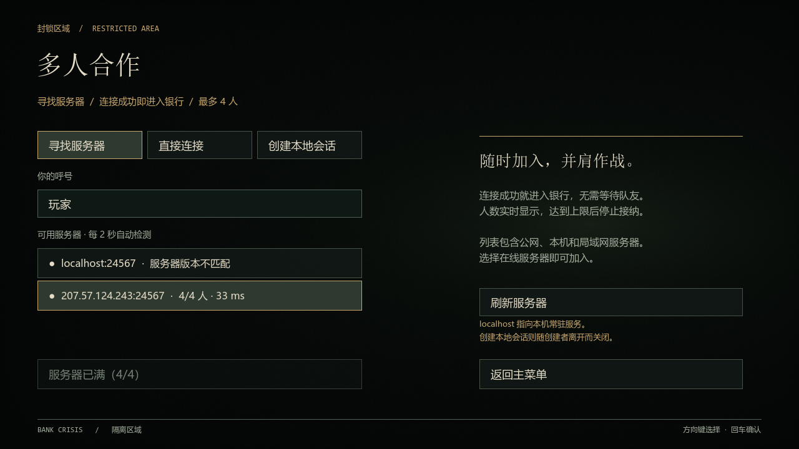
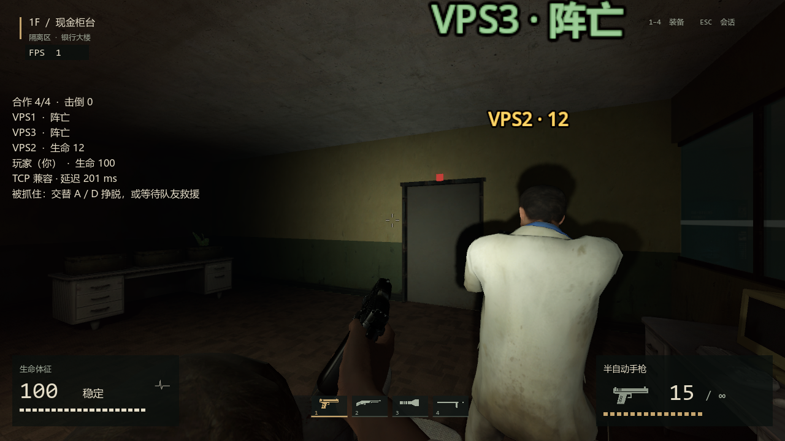
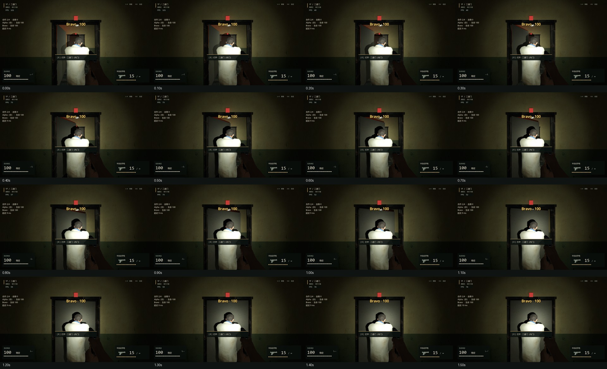
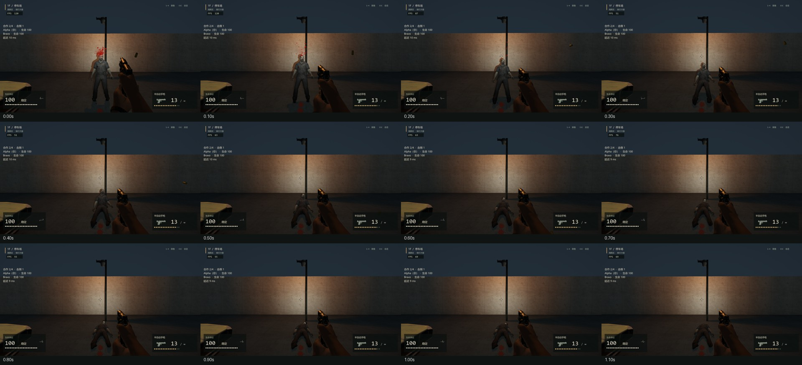
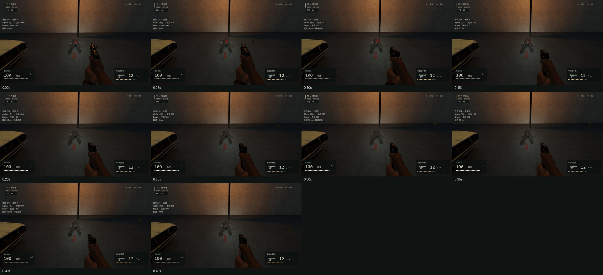
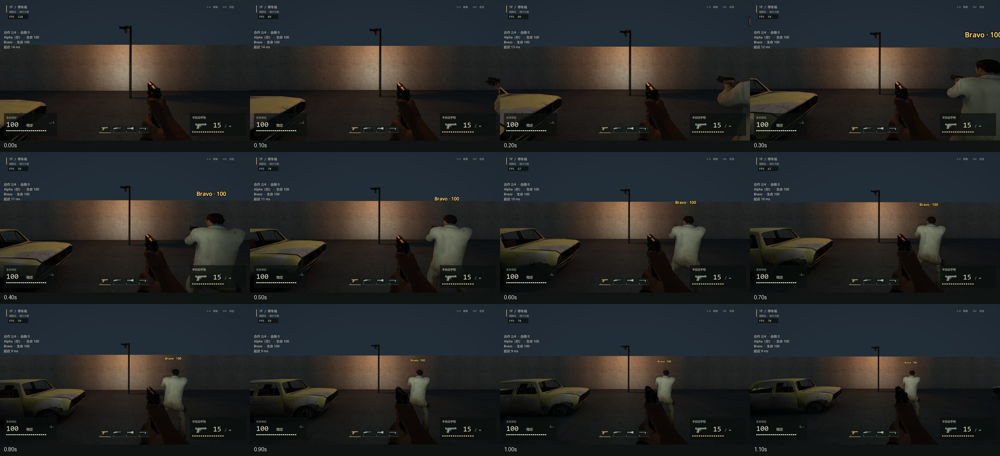
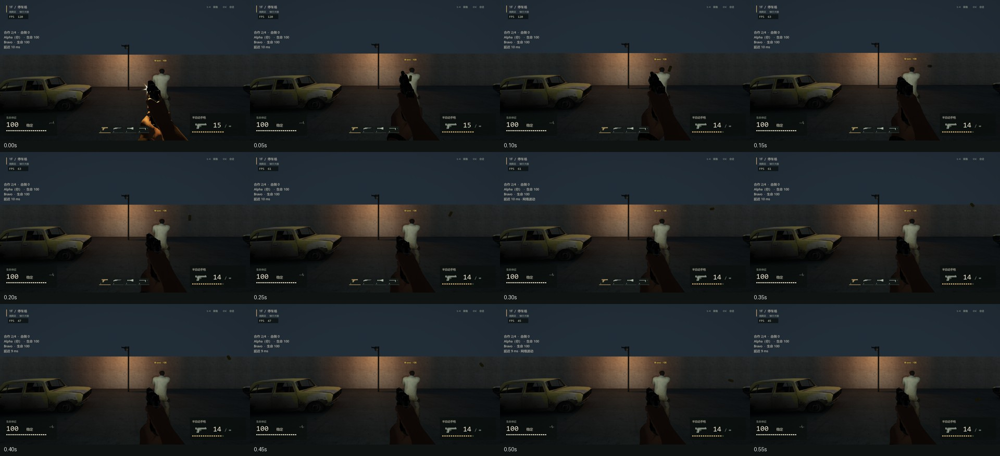

银行公网同步修复与 VPS 复测
仍在验收：候选包不等于正式上线。热点短时战斗无网络问题；原网络存在反例，严格 60 Hz 预算仍未全部通过。正式服务状态以 report.json 和运维文档为准。
结构化报告 · 实现与限制 · 原生 ENet 握手回归
相同公网 VPS，战斗窗口
单位：服务端 Hz、脚本 P95 毫秒。敌人数是初始布置量，非恒定活体数。
| 线路 | 玩家 | 敌人 | 轮次 | Hz | P95 ms | 网络/战斗问题 | 60 Hz 全部预算 |
|---|
| original | 4 | 8 | 1 | 59.65 | 17.11 | 无 | 未全部通过 |
| original | 4 | 16 | 1 | 58.55 | 21.7 | 无 | 未全部通过 |
| phone-hotspot | 2 | 16 | 1 | 56.47 | 24.69 | 无 | 未全部通过 |
| phone-hotspot | 4 | 16 | 1 | 55.59 | 24.77 | 无 | 未全部通过 |
| phone-hotspot | 2 | 8 | 1 | 60.02 | 14.71 | 无 | 未全部通过 |
| phone-hotspot | 2 | 8 | 2 | 60.12 | 15.23 | 无 | 未全部通过 |
| phone-hotspot | 4 | 8 | 1 | 59.44 | 16.32 | 无 | 未全部通过 |
| phone-hotspot | 4 | 8 | 2 | 60.03 | 15.69 | 无 | 未全部通过 |
本地与发布验证（含失败）
- bank-coop-optimization-20261018-203131 — [('verify_coop_pose_equivalence', 'pass'), ('verify_crowd_cache', 'pass'), ('verify_snapshot_delta', 'pass'), ('verify_world_presentation_work', 'pass'), ('verify_network_components', 'pass')]
- bank-network-combat-20261018-203111 — [('bank_network_cooperative_damage', 'pass'), ('bank_network_shared_kill_without_duplicate_shots', 'pass'), ('bank_network_reload_and_shared_door', 'pass'), ('bank_network_live_84_actor_world', 'pass')]
- bank-network-recovery-20261018-203121 — [('bank_network_capacity_reservation', 'pass'), ('bank_network_recovery', 'pass'), ('bank_network_voluntary_leave_releases_slot', 'pass'), ('bank_network_join_during_round_reset', 'pass')]
- bank-tcp-recovery-20261018-205327 — [('tcp_udp_shared_capacity_and_damage', 'pass'), ('tcp_socket_reset_recovery', 'pass'), ('tcp_voluntary_leave_and_replacement', 'pass')]
- bank-tcp-fallback-20261018-210603 — [('udp_unavailable_tcp_fallback_native_join', 'pass')]
- bank-network-visual-20261018-211034 — [('bank_network_corpse_sleep_wake', 'pass'), ('bank_network_rendered_sequences', 'pass')]
- bank-coop-release-20261018-211427 — [('bank_release_starts_menu_without_world', 'pass'), ('bank_release_two_clients', 'pass'), ('bank_release_debug_bridge_disabled', 'pass'), ('bank_release_bake_loaded', 'pass'), ('bank_release_hanging_lights_enabled', 'pa
- bank-network-20261018-201213 — []
- bank-vps-release-20261018-212745 — AssertionError('Population changed during soak')
- bank-vps-release-20261018-213527 — AssertionError('Godot Engine v4.7.2.stable.official.ed1daf0bf - https://godotengine.org\n\nBANK_MAIN_MENU bank_loaded=false\nBANK_LIGHTING {"bake_mode":"indirect_only","loaded":true,"meshes":481.0,"preview":false}\nBANK_
- bank-vps-release-20261018-214012 — AssertionError('Population changed during soak')
- bank-vps-release-20261018-214318 — AssertionError('Timed out waiting for network state')
- bank-vps-release-20261018-214811 — AssertionError('Godot Engine v4.7.2.stable.official.ed1daf0bf - https://godotengine.org\n\nBANK_MAIN_MENU bank_loaded=false\nBANK_LIGHTING {"bake_mode":"indirect_only","loaded":true,"meshes":481.0,"preview":false}\nBANK_
- bank-vps-release-20261018-215216 — AssertionError('Godot Engine v4.7.2.stable.official.ed1daf0bf - https://godotengine.org\n\nBANK_MAIN_MENU bank_loaded=false\nBANK_LIGHTING {"bake_mode":"indirect_only","loaded":true,"meshes":481.0,"preview":false}\nBANK_
- bank-vps-candidate-20261018-211735 — JSONDecodeError('Expecting value: line 1 column 1 (char 0)')
- bank-vps-candidate-20261018-212724 — CalledProcessError(1, ['D:\\AIGameEngine\\.venv\\Scripts\\python.exe', '-m', 'game.tests.verify_vps_release', '--project', 'bank', '--package', 'build\\bank\\combat-coop\\20261018-211024\\windows\\package', '--players',
- bank-vps-candidate-20261018-213508 — CalledProcessError(1, ['D:\\AIGameEngine\\.venv\\Scripts\\python.exe', '-m', 'game.tests.verify_vps_release', '--project', 'bank', '--package', 'build\\bank\\combat-coop\\20261018-211024\\windows\\package', '--players',
- bank-vps-candidate-20261018-213952 — AssertionError('Candidate acceptance failed; all requested cases retained')
- bank-vps-candidate-20261018-214753 — AssertionError('Candidate acceptance failed; all requested cases retained')
- bank-vps-ui-20261018-214518 — AssertionError()
- bank-vps-ui-20261018-215628 — [('vps_default_discovery_no_scene_load', 'pass'), ('vps_first_player_immediate_move_fire', 'pass'), ('vps_four_clients_authoritative_weapon_and_capacity', 'pass'), ('vps_fifth_client_rejected', 'pass'), ('vps_native_brow
实际连续画面
原网络有效发布验收：两人 180 秒累计 1 次重连；四人 180 秒累计 3 次重连。UI 功能通过，稳定性失败。正式服务已恢复 v5、0/4，未发布候选包。
满员 UI；localhost 仍为配对旧版，正确显示版本不匹配
从菜单补位进入银行。此处是冻结截图，HUD FPS 不能作为性能测量；存活队友可以继续战斗。
关门连续帧（固定模拟步进，非帧率证据）
倒地连续帧（固定模拟步进，非帧率证据）
尸体受击（固定模拟步进，非帧率证据）
本地移动预测（固定模拟步进，非帧率证据）
即时开火反馈（固定模拟步进，非帧率证据）